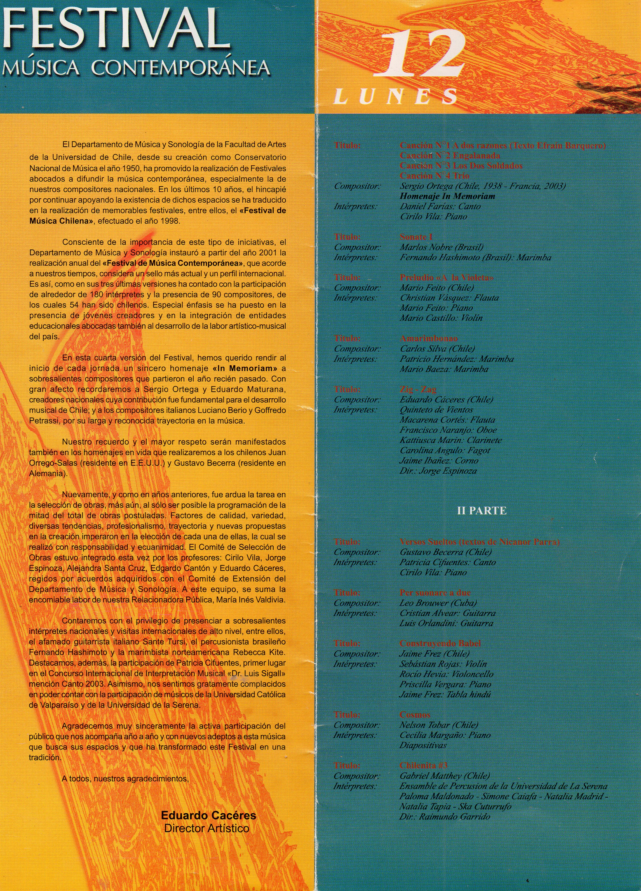
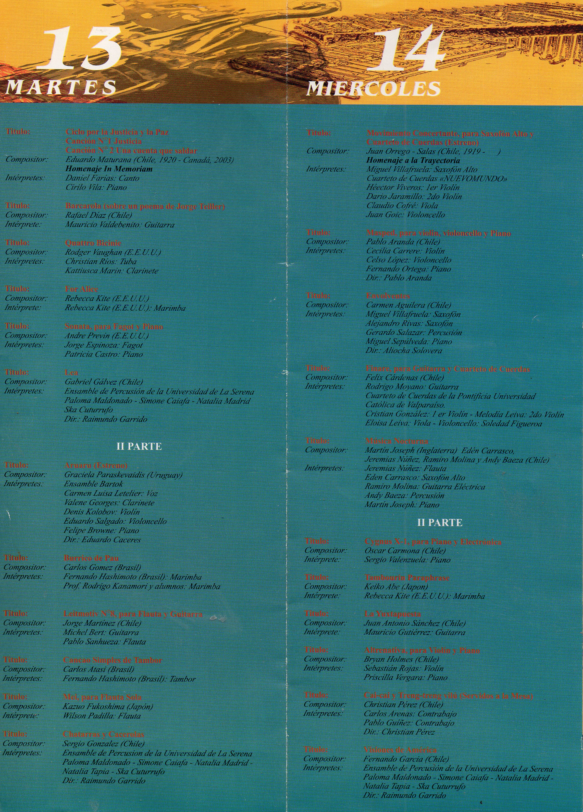
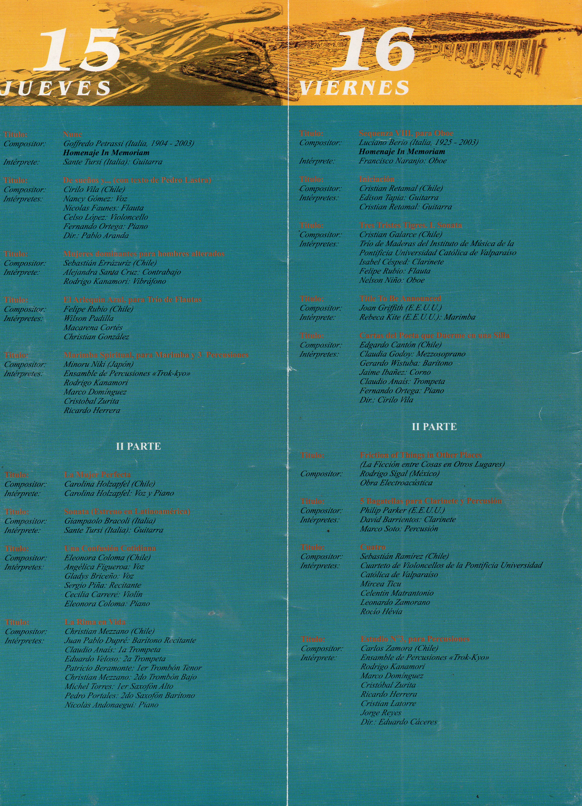
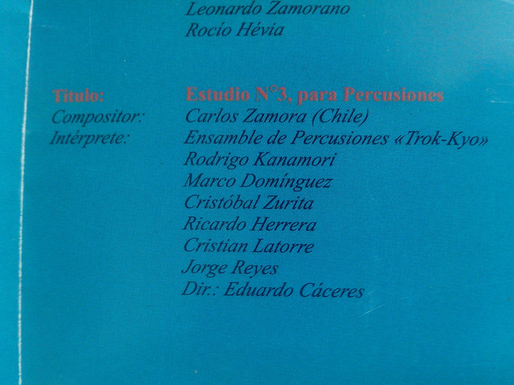
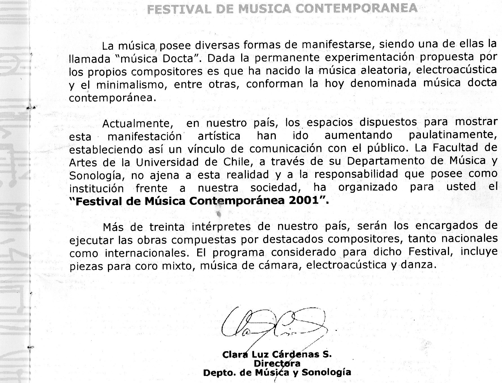
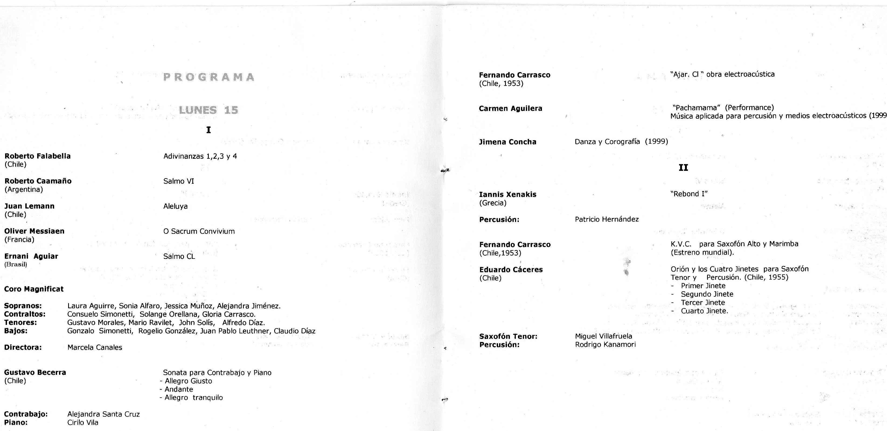
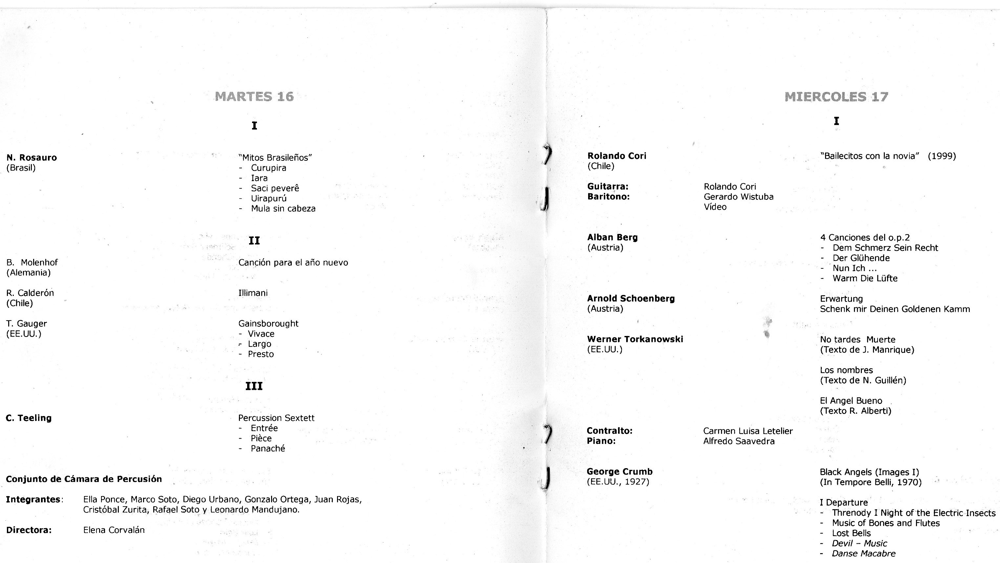
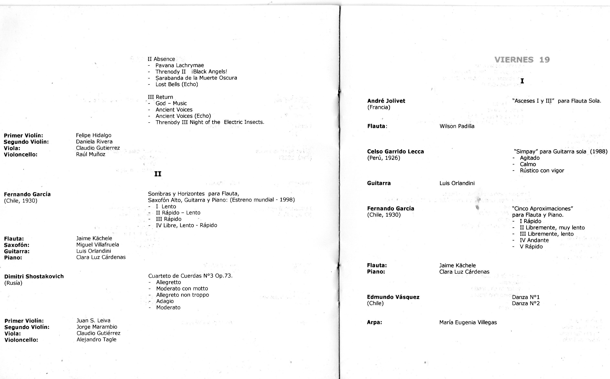
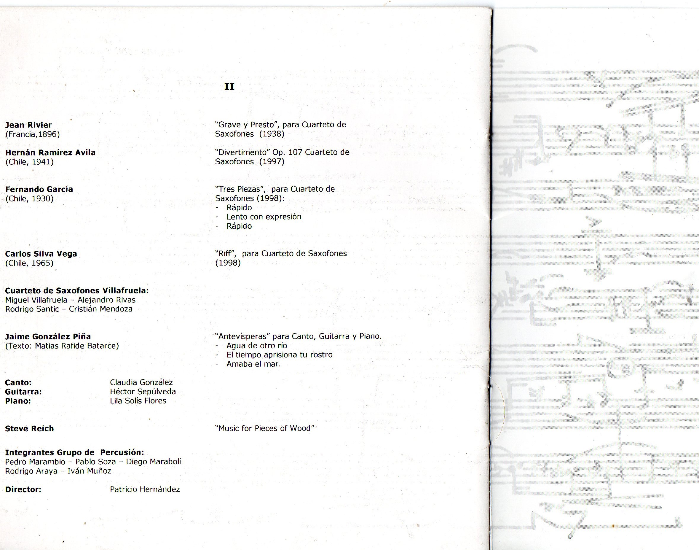

Festival de Música Contemporánea
Participación documentada en las ediciones de 2001 y 2004 del festival de la Universidad de Chile.
Contexto
El Festival de Música Contemporánea de la Universidad de Chile fue uno de los espacios clave para el desarrollo temprano de Cristóbal Zurita como intérprete de música académica de vanguardia. La participación en sus ediciones de 2001 y 2004 quedó registrada en programas oficiales y en una carta de agradecimiento posterior.
Estos documentos sitúan al artista dentro de la escena de la música docta chilena de principios de los 2000 y evidencian su vinculación con el repertorio contemporáneo para percusión.
Edición 2004
Programas y carta de agradecimiento






Edición 2001
Programas del festival





